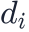
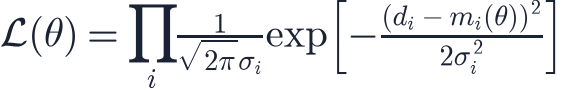
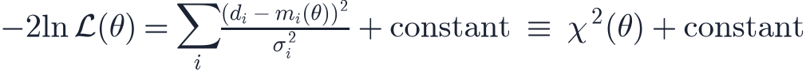
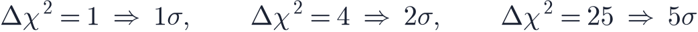
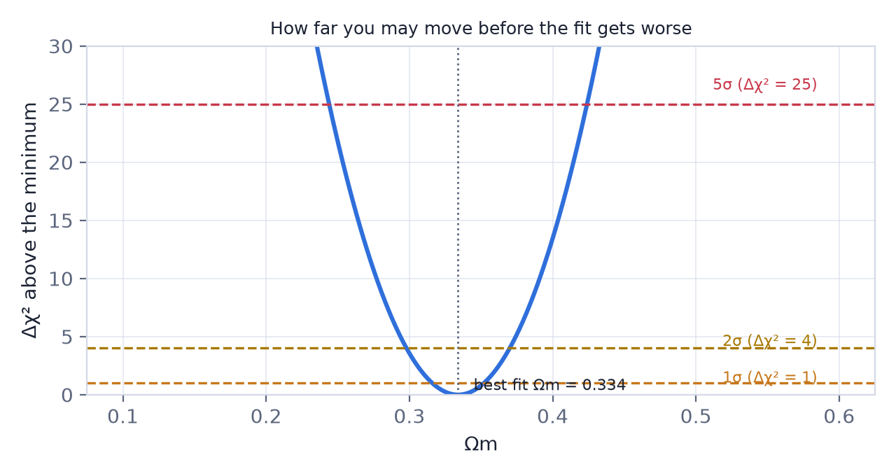
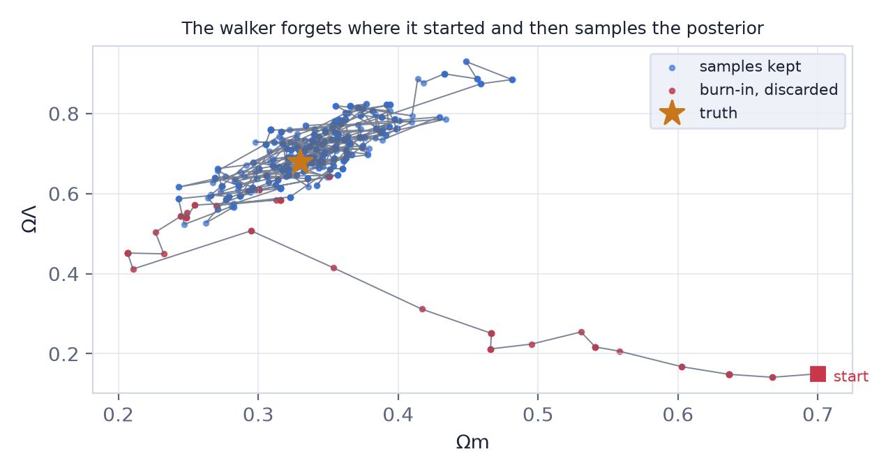

In this lesson you will learn
|
The question behind every number
Papers end with statements like . Where does such a line come from? Always from the same three ingredients:
- a model that predicts what should be measured, for each set of parameters;
- a likelihood that scores how well a prediction matches the data;
- a way to explore the parameters and report the range that survives.
Step 1: the likelihood
Suppose each measurement

has a Gaussian uncertainty and the model predicts for parameters
Multiplying thousands of small numbers is numerically hopeless, so everyone works
with its logarithm, and the constants in front do not depend on  :
:

χ² is not a separate idea For Gaussian errors, minimising χ² and maximising the likelihood are the same operation. Every point contributes the square of its miss, measured in units of its own error bar. A point that misses by 2σ costs four times as much as one that misses by 1σ. |
Step 2: reading χ²
The minimum value of χ² says how good the best fit is. With  data points and
data points and
 fitted parameters there are degrees of freedom, and each one
should contribute about 1:
fitted parameters there are degrees of freedom, and each one
should contribute about 1:
- Much larger than 1: the model is wrong, or the error bars are too small.
- Much smaller than 1: the error bars are too large (or correlated errors have been treated as independent — the usual reason in cosmology).
What the app gets Fitting the real Pantheon+ supernovae in the simulators here gives χ²/dof ≈ 0.44. That is not a miraculous fit: the bundled errors are the diagonal ones only, and the published analysis uses a full covariance matrix that ties nearby supernovae together. The best-fit parameters survive this simplification; the error bars are the part you should not quote. |
Step 3: error bars from the curvature
Move one parameter away from its best value and χ² rises. How far you may move before the fit becomes unacceptable is the error bar:


A sharp, narrow parabola means a precise measurement; a shallow one means the data barely care about that parameter. For a contour in two parameters the thresholds are larger (Δχ² = 2.30 and 6.17 for 68% and 95%), because two things are being allowed to vary at once.
What 5σ does and does not mean "5σ" says: if there were no effect, data this extreme would appear by chance about once in 3.5 million times. It is a statement about randomness only. It says nothing about a miscalibrated telescope, an unnoticed selection effect or a wrong model — and those are what usually go wrong. Several 5σ results in the history of physics were systematics, not discoveries. |
Step 4: exploring the parameters
With two parameters you can simply compute χ² on a grid, as simulator S16 does. With six — the standard ΛCDM set — a grid of 100 points per axis needs 10¹² evaluations. Nobody does that. Instead a random walker explores the parameter space: this is Markov chain Monte Carlo.
The Metropolis rule is three lines:
- From the current parameters, propose a nearby set.
- Compute the likelihood there. If it is better, move.
- If it is worse by a factor
 , move anyway with probability ; otherwise
stay where you are and write the current point down again.
, move anyway with probability ; otherwise
stay where you are and write the current point down again.

Run this long enough and the density of recorded points is the posterior distribution. The mean of the cloud is the measurement, its width is the error bar, and its tilt is the correlation between parameters.
The three numbers that tell you a chain is healthy
|
Try it: Likelihood & MCMC Explorer Run the chain on the real supernovae, then set the proposal step to 0.005 and to 0.4 and watch the acceptance rate, the shape of the cloud and the effective sample size. |
Priors, briefly
A likelihood tells you how well parameters fit the data; a prior says what you believed before. Multiplying them gives the posterior, which is what a chain samples. In cosmology most priors are deliberately dull — "Ωm is between 0 and 1" — but they matter whenever the data are weak, and honest papers say what they used.
Remember this
|